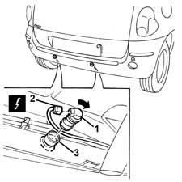

5580H36 parking sensor system rear sensor (1), lh or rh - r r
- Path
- Procedures > 55 ELECTRICAL EQUIPMENT > 5580 SPECIAL ACCESSORIES > 5580H PARKING OBSTACLE DETECTION DEVICE > 5580H36 parking sensor system rear sensor (1), lh or rh - r r
- Kind
- repair procedure (removal / refitting; the operation number is the code)
- Applies to
- all engines; all production periods
- Interactive page
- https://sloeber94.github.io/elrnDB-fMltpl/en/#/2891994
Applies to: all engines; all production periods
 Removing
Removing
 Refitting
RefittingRaise the car at the rear
1. Working inside the bumper, rotate the rear sensor concerned (which has a bayonet fitting) in a clockwise direction and extract it.
2. Disconnect the electrical connections (2a, 2b).
 | Name | Connector |
|---|---|---|
2a | Parking sensor unit |
| Name | Connector |
|---|---|---|
2b | Parking sensor unit |
3. If necessary, remove the bush from the bumper from the outside.

Applies to: all engines; all production periods
Refitting
RemovingCheck that the sensor is not damaged.
If removed, fit the bush on the bumper.
Connect the electrical connection.
Fit the sensor in the housing and rotate it.
Lower the vehicle.
Check the operation of the device.